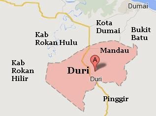

Duri adalah ibukota dari kecamatan Mandau,kabupaten Bengkalis,Riau,Indonesia.Duri terletak di kecamatan Mandau, berada di lajur Jalan Raya Lintas Sumatra, sekitar 130 km dari Pekanbaru dalam perjalanan menuju Medan.
Duri adalah salah satu ladang minyak di provinsi Riau. Ladang Minyak Duri telah dieksploitasi sejak tahun 50-an dan masih berproduksi oleh PT Chevron Pacific Indonesia (CPI). Bersama Minas dan Dumai, Duri menyumbang sekitar 60% produksi minyak mentah Indonesia, dengan rata-rata produksi saat ini 400.000-500.000 barel per hari.
